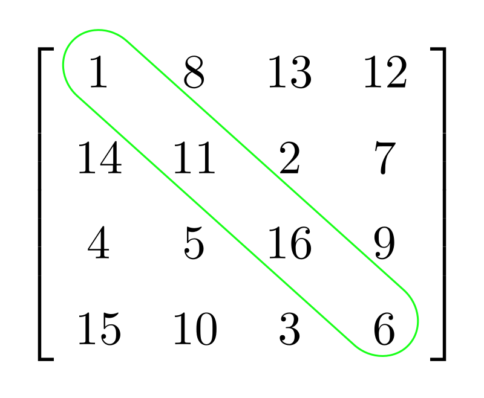

Czym jest macierz?
W matematyce macierz to układ liczb, symboli lub wyrażeń zapisanych w postaci prostokątnej tablicy.https://pl.wikipedia.org/wiki/Macierz
Charakterystyka macierzy
Wiersze i kolumny
- wiersz
- Pozioma seria liczb znajdująca się w jednej linii
- kolumna
- Pionowa seria liczb znajdująca się w jednej linii
Wymiary macierzy
- wymiary macierzy
- Określenie ilości wierszy i kolumn w danej macierzy. Zapisywane w formacie wiersze x kolumny. Przykładowo zapis 2x3 oznacza, że macierz ma dwa wiersze i trzy kolumny.
Niektóre rodzaje macierzy
Macierz kwadratowa
Macierz, która posiada taką samą liczbę wierszy i kolumn. Macierz ta posiada swoją przekątną, czyli elementy leżące 'na skosie', zaczynając od lewego górnego rogu a kończąc na prawym dolnym:
 Autorstwa CiaPan - Praca własna, CC0, https://commons.wikimedia.org/w/index.php?curid=33371581Macierz jednostkowa
Macierz kwadratowa, która na głównej przekątnej ma same jedynki, a pozą główną przekątną - same zera.
Macierz zerowa
Macierz, której wszystkie elementy są równe 0.